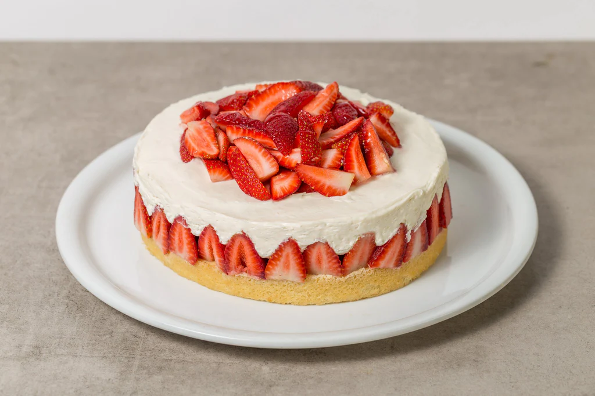

Pastel de fresa
Un pastel ligero y jugoso donde el sabor suave del bizcocho de vainilla se combina con la frescura de las
fresas naturales. Decorado con crema batida o fresas por encima, resulta una opción perfecta para
celebraciones, reuniones informales o un postre encantador de temporada.

Ingredientes
- Para el bizcocho: 3 huevos, 170 g (aprox. ¾ taza) de azúcar, 170 g (aprox. 1⅓ tazas) de harina de trigo,
cernida
- Para el relleno y crema: 2 tazas de crema para batir (nata), Fresas frescas, lavadas y cortadas en
mitades o láminas, cantidad al gusto
- Otros (opcionales): Polvo de hornear (si deseas que el bizcocho quede más esponjoso), esencia de
vainilla para aromatizar la crema o el bizcocho
Proceso
- Precalentamiento y preparación del molde:
Precalienta el horno a unos 180 °C. Engrasa y enharina un molde redondo de aproximadamente 20–22 cm.
- Batido del bizcocho:
En un tazón, bate los huevos con el azúcar hasta que la mezcla aclare y aumente su volumen. Agrega la
harina cernida con movimientos suaves para mantener el aire incorporado. Si usas polvo de hornear,
incorpóralo ahora.
- Horneado:
Vierte la masa en el molde preparado. Hornea entre 25 y 35 minutos, o hasta que un palillo insertado en
el centro salga limpio. Deja enfriar sobre una rejilla.
- Montaje del pastel:
Corta el bizcocho por la mitad en 2 capas (si el grosor lo permite). Bate la crema con azúcar al gusto
y, si deseas, una cucharadita de vainilla hasta obtener picos suaves. Coloca crema en la capa inferior,
añade fresas laminadas, luego cubre con la segunda capa y finaliza con más crema y fresas por encima.
Obtendrás un pastel esponjoso, suave y delicado, con notas frutales resaltadas por la frescura de las fresas
y la ligereza de la crema. Su apariencia fresca y su textura equilibrada lo hacen ideal para disfrutar en
cualquier celebración o como un postre dulce y sencillo.